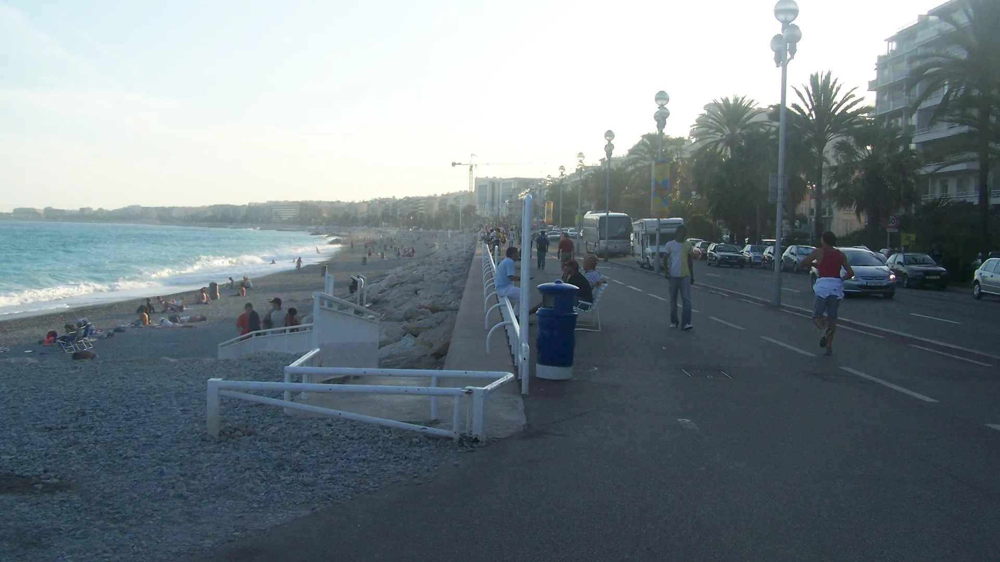

{kind=link}
관광·미술관
Nous avons déjà des billets.
이미 표가 있습니다.
누 자봉 데자 데 비예

19세기 초 혹독한 북유럽의 겨울을 피해 니스에 머물던 영국 귀족들이 매일 지중해 바다를 바라보며 산책하던 길에서 시작되었다.
1822년 겨울, 한파로 일자리를 잃은 니스 빈민들을 구제하기 위해 영국인 목사 루이스 웨이(Lewis Way)가 기금을 모아 자갈 해변을 따라 첫 2m 폭의 산책로를 닦았고, 현지인들은 이를 '영국인의 산책로(Camin dei Anglés)'라 불렀다.
오늘날에는 동쪽 성채 언덕(Colline du Château) 아래 벨랑다 탑에서 서쪽 공항까지 약 7km에 달하는 완만한 해안 대로로 확장되었다. 지중해의 코발트블루 바다와 하얀 파도, 야자수 가로수, 그리고 1913년 완공된 핑크빛 돔의 호텔 네그레스코(Hôtel Negresco) 등 호화로운 벨 에포크(Belle Époque) 호텔들이 어우러져 전 세계 리조트 문화의 원형을 보여준다.
단순한 해변 도로가 아니라 유럽의 근대 휴양 문화가 탄생한 살아있는 역사 공간이다. 자갈 해변에 놓인 상징적인 파란 의자(Chaises Bleues)에 앉아 파도 소리를 듣거나, 일몰 45분 전 동쪽 벨랑다 탑 계단에서 시작해 서쪽으로 걸으며 핑크빛과 보랏빛으로 물드는 천사의 만을 감상하는 코스가 압권이다.
| 운영시간 | 시간 제한 없음 (24시간 개방) |
|---|---|
| 휴무 | 연중무휴 — 공항·파크 피닉스에서 케 데 제타쥐니까지 7km 해안 산책로, 상시 개방. 단 대형 행사·공사 시 니스시가 구간별 통행 제한을 공지한다 |
| 예약 | 예약 불필요 |
| 소요시간 | 30–60분 재확인 |
| 항목 | 상세 정보 |
|---|---|
| 위치 | Promenade des Anglais, 06000 Nice, France |
| 운영/요금 | 상시 개방 / 무료 (Free Admission) |
| 교통편 | 트램 2호선(L2) Centre Universitaire Méditerranéen, Alsace-Lorraine 또는 Garibaldi / Grand Tour |
| 보행 주의 | 자전거/전동 킥보드 전용 차선과 보행자 산책로가 엄격히 분리되어 있으므로 차선 침범 주의 |
🌅 일몰 팁: 성채 언덕(Colline du Château)에서 해질녘을 감상한 뒤 계단을 따라 프롬나드 데 장글레로 내려와 가로등이 켜지는 해변을 걷는 동선이 가장 이상적입니다.
산책로 서쪽에 우뚝 솟은 호텔 네그레스코(Hôtel Negresco)는 1913년 루마니아 출신 앙리 네그레스코가 세운 벨 에포크 건축의 정점이다. 에펠탑을 설계한 귀스타브 에펠이 유리 돔 천장을 설계했으며, 살바도르 달리, 파블로 피카소, 어니스트 헤밍웨이 등이 묵었던 지중해 예술의 산실이다.
1950년 샤를 트레셀(Charles Tresserra)이 디자인한 니스 해변의 파란 목재 안락의자는 니스 산책로의 아이콘이다. 과거에는 의자 대여료를 받던 유료 시설이었으나, 현대에는 시 당국이 해변을 따라 영구 고정 설치하여 누구나 자유롭게 지중해 수평선을 바라보며 사색할 수 있게 되었다.
Nous avons déjà des billets.
이미 표가 있습니다.
누 자봉 데자 데 비예
On peut prendre des photos ?
사진 찍어도 되나요?
옹 푀 프랑드르 데 포토
Où commence la visite ?
관람은 어디서 시작하나요?
우 코망스 라 비지트

국제영화제의 상징 크루아제트 대로와 호화 요트 항구, 그리고 11세기 중세 어촌의 원형 르 쉬케 언덕이 공존하는 코트다쥐르의 영화 도시.

해발 92m 바위 절벽 위에서 천사의 만(Baie des Anges)과 구시가지, 림피아 항구를 360도 파노라마로 굽어보는 니스 최고의 천연 전망 공원.

지중해 꽃과 프로방스 제철 식재료, 그리고 갓 구워낸 니스 전통 소카(Socca)를 맛보는 유서 깊은 야외 시장 광장.

지중해로 60m 솟아오른 천연 바위 절벽 위에 조성된 모나코 대공국의 역사적 심장부이자 왕궁 마을.

크루아제트의 화려함 뒤에 숨겨진 11세기 옛 어촌의 가파른 돌계단 골목과 정상 성당에서 바라보는 칸 만의 파노라마.

칸 주민들의 부엌이자 지중해 해산물, 프로방스 과일, 꽃, 치즈가 가득한 1934년 유서 깊은 철골 재래시장.